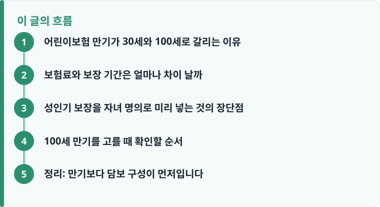

100세 만기는 어린이 시기 이후 성인기 보장까지 자녀 명의로 미리 확보하는 설계이고, 30세 만기는 어릴 때의 위험만 저렴하게 대비하는 설계입니다.
만기가 길수록 보장 기간이 길어져 보험료가 오르지만, 어릴 때 낮은 위험률로 비갱신 담보를 선점한다는 장점이 있습니다.
100세 만기라도 갱신형 특약이 섞여 있으면 나중에 보험료가 오를 수 있어, 비갱신 담보와 갱신 담보를 나눠 봐야 합니다.
어린이보험 만기가 30세와 100세로 갈리는 이유
‘어린이보험’이라는 이름만 보면 아이가 어릴 때만 보장하는 상품처럼 느껴지지만, 실제 상품은 만기를 30세로 짧게 설계할 수도 있고 100세까지 길게 설계할 수도 있습니다. 30세 만기는 소아기·청소년기의 골절, 화상, 감염병 입원, 소아암 같은 어린이 특유의 위험에 집중하는 설계입니다. 반면 100세 만기는 여기에 더해 성인기에 발생하는 암, 뇌·심혈관 질환, 각종 수술비까지 자녀 명의로 미리 확보해 두는 설계입니다. 어린이보험의 기본 담보 구조가 낯설다면 어린이보험 기본 구조를 먼저 보면 만기 선택이 이해가 쉽습니다.
즉 만기 선택은 단순히 ‘몇 살까지 보장받느냐’의 문제가 아니라, 이 계약을 어린 시절의 임시 보장으로 쓸지 아니면 평생 들고 갈 종합 건강보장으로 쓸지를 정하는 방향의 문제입니다. 30세 만기는 아이가 성인이 되어 스스로 자기 보험을 새로 설계하도록 여지를 남기는 쪽이고, 100세 만기는 부모가 낮은 보험료로 미리 틀을 잡아 물려주는 쪽에 가깝습니다.
보험료와 보장 기간은 얼마나 차이 날까
같은 담보라도 만기가 길면 보험료를 부담하는 대상 기간과 위험 노출 기간이 늘어나므로 월 보험료가 올라갑니다. 30세 만기와 100세 만기를 비교하면, 보장하는 기간이 약 70년가량 더 길어지는 만큼 100세 만기 쪽 보험료가 눈에 띄게 높게 책정되는 것이 일반적입니다. 다만 어린이보험의 강점은 가입 시점의 나이가 어려서 위험률이 매우 낮다는 데 있습니다. 그래서 100세까지 보장하는 담보라도 성인이 된 뒤 같은 보장을 새로 가입하는 것보다 월 보험료 자체는 저렴하게 고정되는 경우가 많습니다.
여기서 반드시 구분할 것이 ‘납입기간’과 ‘만기’입니다. 100세 만기라고 해서 100세까지 보험료를 내는 것이 아니라, 20년납·30년납처럼 정해진 기간만 납입하고 이후에는 납입 없이 보장만 유지하는 구조가 많습니다. 그리고 담보가 비갱신형이냐 갱신형이냐에 따라 총부담이 크게 달라집니다. 비갱신형은 처음 정한 보험료가 만기까지 그대로 유지되지만, 갱신형은 갱신주기(보통 10년, 15년, 20년)마다 그 시점의 나이와 위험률로 보험료가 다시 계산되어 오릅니다. 이 구조 차이가 헷갈린다면 보장·면책·감액기간 안내와 함께 갱신·비갱신 개념을 확인해 두는 것이 좋습니다.

성인기 보장을 자녀 명의로 미리 넣는 것의 장단점
100세 만기 어린이보험의 가장 큰 매력은 ‘비갱신 담보 선점’입니다. 암 진단비, 뇌혈관·허혈성심장질환 진단비, 수술비 같은 핵심 담보를 위험률이 낮은 어린 나이에 비갱신형으로 확정해 두면, 성인이 되어 위험률이 높아진 뒤에도 어릴 때 정한 낮은 보험료가 그대로 유지됩니다. 또한 아이가 어릴 때는 병력이나 건강 이상 소견이 거의 없어 심사에서 부담보(특정 부위·질병 보장 제외)나 할증 없이 표준체로 가입할 가능성이 높습니다. 성인이 된 뒤 질병 이력이 생기면 아예 가입이 거절되거나 조건부로만 가입되는 담보를, 건강할 때 미리 확보한다는 의미가 큽니다.
반대로 단점도 분명합니다. 첫째, 30세 만기보다 보험료가 높아 같은 예산이면 담보 금액을 줄여야 할 수 있습니다. 둘째, 지금 설계한 보장이 20~30년 뒤 성인기의 의료 환경이나 자녀 본인의 필요와 맞지 않을 수 있습니다. 의료 기술과 표준약관은 계속 바뀌므로, 지금 최선인 담보가 미래에도 최선이라는 보장은 없습니다. 셋째, 계약자가 부모라도 성인이 된 자녀가 계약을 이어받거나 유지 의사를 가져야 실효를 막을 수 있습니다. 자녀 가정 전체의 보장을 함께 설계하려면 자녀 있는 가정 보험 가이드에서 우선순위를 잡아 보는 것이 도움이 됩니다.
정리하면 100세 만기는 ‘건강할 때 낮은 위험률로 평생 담보를 선점한다’는 장점과 ‘미래 필요와 어긋날 수 있고 보험료가 높다’는 단점이 맞물립니다. 그래서 실무에서는 100세 만기로 큰 틀을 잡되, 담보별로 비갱신은 길게·갱신은 짧게 나누는 식의 절충 설계를 많이 씁니다.
작성·검수 기준
이 글은 특정 보험사 상품을 권유하려는 것이 아니라, 어린이보험 만기를 30세로 할지 100세로 할지 판단할 때 알아야 할 일반적인 기준을 설명하기 위해 작성했습니다. 보험료 수준, 납입기간, 갱신·비갱신 여부, 감액·면책 조건은 가입 시점의 약관과 개별 상품에 따라 달라질 수 있습니다.
정확한 보장 범위와 보험료는 본인 증권의 약관과 상품설명서, 그리고 보장·면책·감액기간 안내를 함께 확인하는 것이 가장 정확합니다.
100세 만기를 고를 때 확인할 순서
만기 결정은 ‘길게 vs 짧게’가 아니라, 담보를 하나씩 뜯어 보고 어떤 것을 평생 들고 갈지 정하는 작업입니다. 태아 때부터 가입했다면 출생 전 담보와 출생 후 담보가 나뉘어 있으므로, 태아 특약과 어린이 담보의 관계를 먼저 정리하는 것이 좋습니다. 이 부분은 태아보험 가입 시점과 담보를 함께 보면 이해가 쉽습니다. 아래 순서대로 확인하면 만기 선택의 실익을 따지기 쉽습니다.
- 암·뇌·심장 진단비처럼 성인기에 더 중요한 핵심 담보가 비갱신형인지 확인합니다.
- 실손·수술비 등 갱신형 담보의 갱신주기(10년·15년·20년)와 갱신 시 인상 가능성을 확인합니다.
- 납입기간(20년납·30년납 등)과 만기를 구분해 총 납입액을 계산합니다.
- 30세 만기로 낮춰 절약한 보험료를 성인기 별도 가입에 쓰는 시나리오와 비교합니다.
- 지금 예산 안에서 진단비 금액을 줄이지 않고 100세 만기를 유지할 수 있는지 점검합니다.
정리: 만기보다 담보 구성이 먼저입니다
100세 만기가 무조건 정답은 아닙니다. 핵심은 ‘몇 세 만기’라는 숫자가 아니라, 성인기까지 들고 갈 가치가 있는 비갱신 담보를 건강할 때 낮은 보험료로 확보했는지입니다. 진단비 같은 핵심 담보는 100세 비갱신으로 길게, 활용 폭이 자주 바뀌는 담보는 짧게 두는 식으로 나누면, 보험료 부담과 평생 보장이라는 두 목표를 함께 잡을 수 있습니다.
다른 보험 정보 글이 궁금하다면 보험지식 블로그에서 이어 읽어 보세요. 가입 전에는 반드시 약관과 상품설명서를 확인하는 것이 가장 안전한 방법입니다.